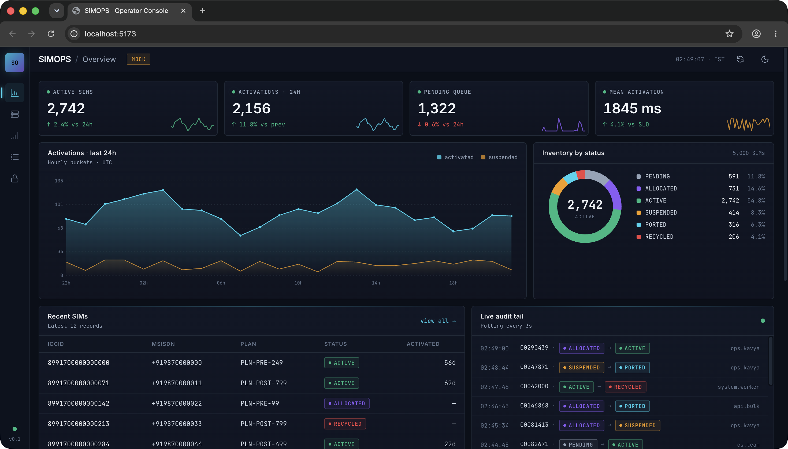
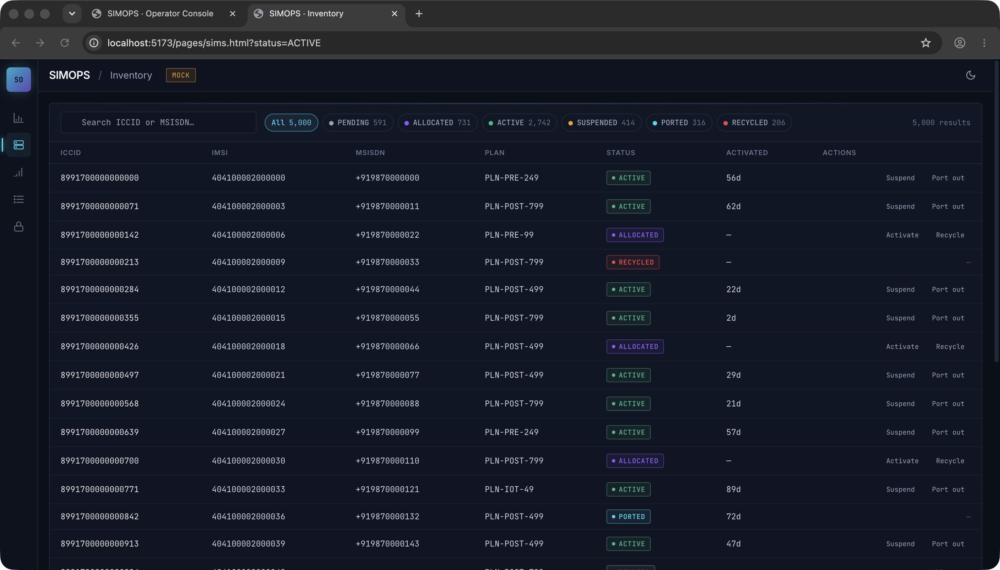
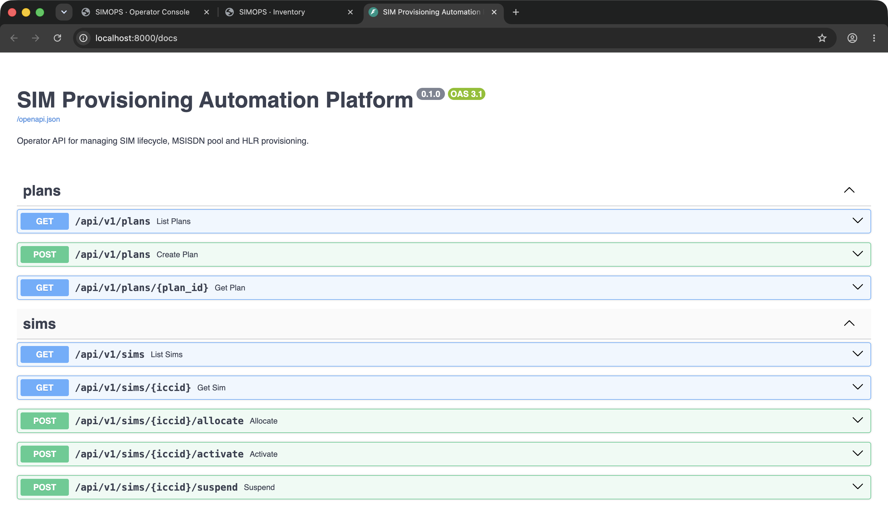
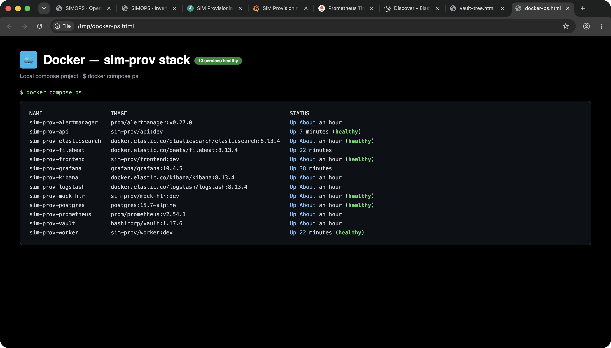
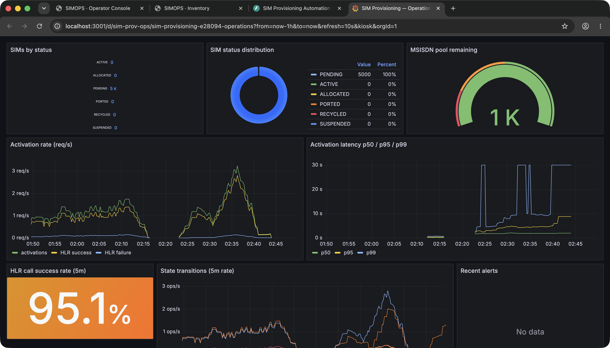
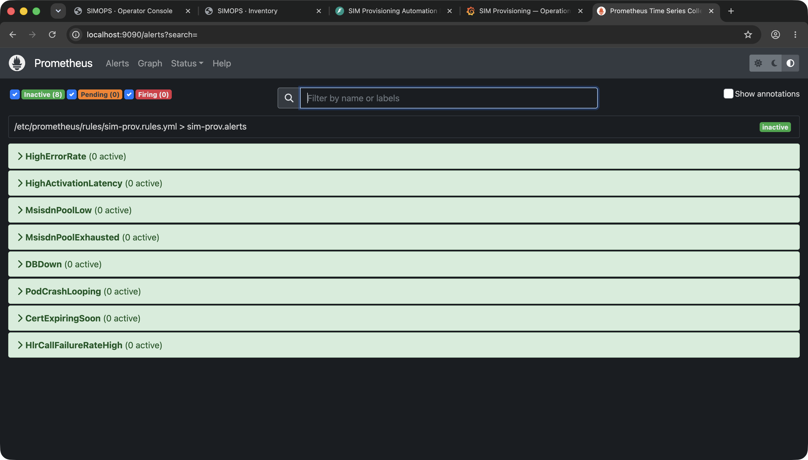
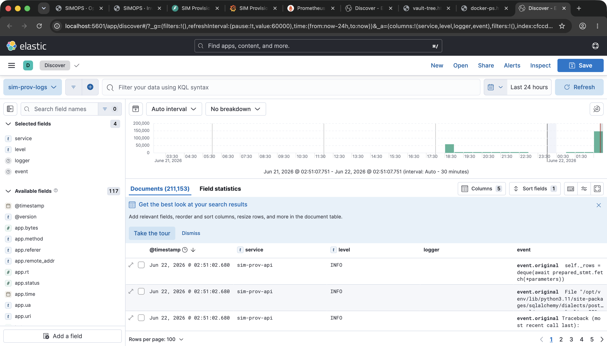
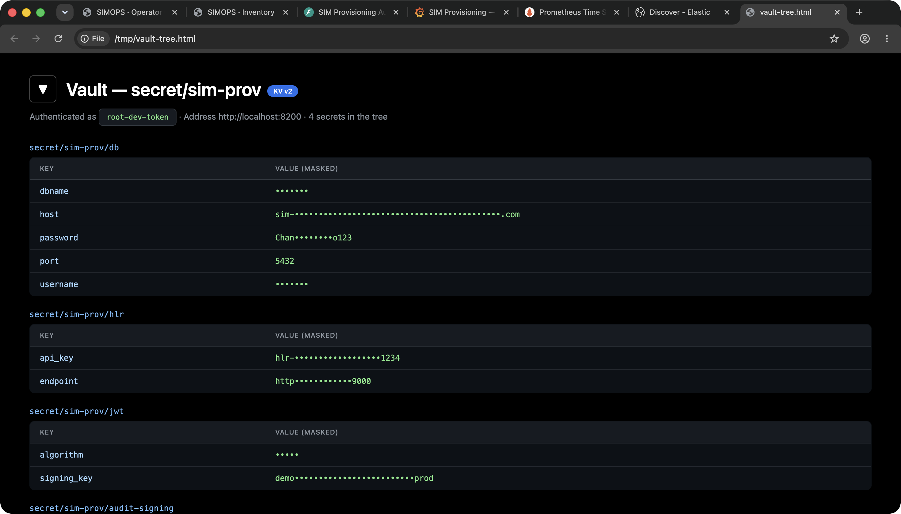

A telecom-operator pipeline for activating SIM cards — built end-to-end with the full DevOps lifecycle: Docker, Jenkins, Terraform, Kubernetes, Prometheus, Grafana, ELK and Vault.
A working FastAPI service plus every layer of the DevOps lifecycle that wraps around it — proved out locally with thirteen containers, real metrics, real logs, and a real lifecycle state machine.
A telecom-operator-grade pipeline for activating SIM cards, modelled on real-world pain points and built with production patterns end-to-end.
A working FastAPI service backed by Postgres, modelling the real telecom state machine: PENDING → ALLOCATED → ACTIVE → SUSPENDED / PORTED / RECYCLED. Every transition writes an immutable audit event. Around it, the full DevOps lifecycle:
Multi-stage Dockerfiles · non-root · tini PID 1 · compose-orchestrated local stack.
Jenkins pipeline — 9 stages with Trivy scan, smoke test and manual prod gate.
Terraform · VPC · EKS 1.29 · RDS Postgres 15 multi-AZ.
Hardened pod-spec, HPA 3–12, PDB, NetworkPolicy, Vault agent injector.
Prometheus + Grafana + Alertmanager + ELK — RED metrics + business KPIs.
HashiCorp Vault — kv/sim-prov tree with DB, HLR, JWT and audit-signing keys.
Operators hit the dashboard, which calls the FastAPI service. State lands in Postgres, metrics in Prometheus, logs in ELK, and secrets are pulled from Vault at startup. The async worker drives HLR provisioning — every step audited.
Live KPI cards, donut by status, audit feed polling every second, inventory table with status pills, transition actions.
OpenAPI schema, async SQLAlchemy + asyncpg, prometheus_client metrics, structlog JSON logs with request_id propagation.
Polls ALLOCATED SIMs, calls mock-HLR for provisioning, transitions to ACTIVE on success — emits HLR call counters labelled by outcome.
Tables: plans, sims, msisdn_pool, audit_events. Indexed by status and last_transition_at for hot operator queries.
RED + business KPIs; 8 alert rules; structured logs flowing live into sim-prov-* indices.
secret/sim-provDB creds, HLR API key, JWT signing keys and audit-signing material — pulled at app start, never written to disk.
Operator-facing console & the FastAPI service that drives it. Every screenshot here is the live system serving real data.

Filterable SIM table — status pills, plan, MSISDN, last-transition timestamp, per-row lifecycle actions. Operators land here to suspend / port-out individual SIMs or bulk-allocate from PENDING.

ACTIVE — status pills + lifecycle actions per row.Auto-generated Swagger UI — every endpoint discoverable with its request/response schema. The SIMs router exposes the full lifecycle as POST endpoints, each enforcing the legal state-machine transitions.

allocate, activate, suspend, resume, port_out, recycle — each a real state-machine transition guarded server-side.Thirteen services orchestrated with docker compose: api, worker, postgres, mock-hlr, frontend, vault, prometheus, alertmanager, grafana, elasticsearch, logstash, kibana, filebeat.
app user, uid 1001, on every image./healthz probe.
RED metrics (rate, errors, duration) layered with business KPIs — every panel queries a metric the API actually exports, validated end-to-end.
sim_state_transitions_total{from_status, to_status} — every lifecycle move.sim_activation_latency_seconds — histogram → p50 / p95 / p99 via recording rules.sim_count_by_status{status} — gauge refreshed every 10s by an async background task.msisdn_pool_remaining, hlr_calls_total{outcome} — pool depth, HLR success rate.
Eight Prometheus alert rules covering errors, latency, capacity, infra health and certificate hygiene — each one carrying a runbook URL on the annotation.
| Rule | Trigger | Severity |
|---|---|---|
| HighErrorRate | 5xx ratio > 5% for 10m | critical |
| HighActivationLatency | p95 > 5s for 15m | warning |
| MsisdnPoolLow | pool < 1000 for 5m | warning |
| MsisdnPoolExhausted | pool < 100 for 1m | critical |
| DBDown | pg_up == 0 for 2m | critical |
| PodCrashLooping | restart rate > 0 for 10m | warning |
| CertExpiringSoon | TLS cert < 14 days | warning |
| HlrCallFailureRateHigh | success < 95% for 10m | warning |

sim-prov.rules.yml, all inactive — the desired steady state.Filebeat tails every container's stdout, ships to Logstash, which parses JSON-structured app logs and indexes into Elasticsearch — searchable in Kibana with the operator's full request_id trail.

sim-prov-* index over the last 24h — timestamp histogram showing the live traffic burst, and the operator's request log entries below with service / level / logger / event columns.HashiCorp Vault running in dev mode for the local stack, hardened K8s deployment pattern for production with the Vault Agent Injector rendering secrets at pod start.
secret/sim-prov/db — Postgres host, port, user, password, dbname.secret/sim-prov/hlr — HLR mock endpoint and API key.secret/sim-prov/jwt — signing key and algorithm for the operator console.secret/sim-prov/audit-signing — HMAC key used to sign every audit-event row.The API at startup makes one call to vault kv get secret/sim-prov/db, populates the SQLAlchemy DSN, then drops the token. Production uses the K8s Vault Agent Injector with auto-renewal and never writes secrets to disk.

root-dev-token and connectors resolve at startup.The pipeline and the cloud target — Jenkins driving Terraform-provisioned EKS, with a hardened pod spec and Vault-injected secrets.
# terraform/envs/prod/main.tf — abbreviated module "vpc" { source = "../../modules/vpc" azs = 3 cidr = "10.20.0.0/16" } module "eks" { source = "../../modules/eks" version = "1.29" irsa = true } module "rds_pg" { source = "../../modules/rds_pg" multi_az = true backup_retention = 7 }
seccompProfile: RuntimeDefault.minAvailable: 2; NetworkPolicy restricting ingress and egress.Everything in this deck is reproducible in three commands.
http://localhost:5173http://localhost:8000/docshttp://localhost:3001http://localhost:9090http://localhost:9093http://localhost:5601http://localhost:8200http://localhost:9000/docsReal AWS apply, real Vault unseal flow, real HLR integration, full load test — all in the repo as code, not deployed in this submission.
github.com/Sayuj63/Devops-internals · main branch · all 8 screenshots live under docs/screenshots/.